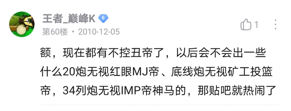

超多炮笑话
作者：QED群多人（🔗百度贴吧）
收录时间：2022-08-05

我们从古以来，就有分离不出橄榄的人，有变速不解夹0的人，有中场不消延迟的人，有偷冰开局的人，有女仆收尾的人，有跳跳收不全的人，有巨人容易漏的人，有拦截漏小鬼的人，有尾炸高炮损的人，有小丑不爆的人，有追求2F的人……这就是超多炮的脊梁。
-
重铸少炮的荣光
无炮复兴义不容辞
珍珑界的希望
……超多炮：打出2f就是胜利 -
少炮玩家：有人要打我的阵吗？好激动
无炮玩家：有人要打我的阵吗？好开心
超多炮玩家：什么？有人要打我的阵？？完了 -
面对2％的成功概率：
IZE：这个解法稳定死。不能用。
超多炮：这个解法还没被完爆，可以用。 -
心理学家去做实验。他给路人看半杯子水：
少炮玩家：这还有半杯水呢
无炮玩家：只剩半杯水了
这时一阵大风吹来，杯子翻了
一个超多炮玩家走来：快看！这杯子还没干呢！ -
超多炮玩家做报告说：“……美好的节操已经出现在超多炮的地平线上了……”
一人不知道什么是地平线，在网络上提问，得到回答：地平线就是能看到却永远走不到的一条线。 -
——超多炮人第六感的什么方面最发达
——在没有节操时高度的满足感。 -
-- 我刚发现这个超多炮的解有个很大的漏洞。
-- 哦？说来我听听。
-- 你疯了吗？我才刚把视频发出去！ -
一个人在某超多炮视频下发了一个评论：“小丑炸炮无解，梯子啃炮无解，巨人砸炮也无解。”
另一个人愤怒地回复道：“这位同志，你要是不同意这么做，我就只能锁所有的随机数来打视频了。”
那个人看了看，回复道：“看吧，连分离刷新的问题也无解了。” -
问：无炮玩家和超多炮玩家举行pvz节操大赛时，无炮玩家拿到了第一，我们该怎么报道
答：“在pvz节操大赛中，我们的超多炮玩家获得了光荣的第二名，无炮玩家则为倒数第二。” -
A：话说你那个阵，翻修得怎么样了？能打吗？
B：翻修起来没有难度啊。我这个月已经翻修四次了 -
一个人对超前置炮自豪地说道：“通过无数次细节优化，我终于实现了超前置炮严谨无伤。”
这时候他身后的鬼位炮发话了：“那我们怎么办？” -
一个阵型的阳光不够。
无炮玩家：试试加花。
少炮玩家：试试偷菜。
超多炮玩家：这个不是极限阵啊？ -
在一次游戏中一门超前置炮看到正在运行脚本的超多炮玩家就说像自己的外甥。
别人训斥它：瞎说什么，这是超多炮玩家。
超前置炮：他是干什么的？ 答：他赶跑了红眼
超前置炮急切地问：他能不能把梯子也赶跑啊？ -
一个IZE玩家对超多炮玩家说：“我们可以用1000次的试验证明这个解能让僵尸吃掉脑子，你们呢？”
超多炮玩家不服地回击道：“这算什么？我们也能用1000次的试验证明这个解能让僵尸吃掉脑子。” -
一个el玩家死后去了地狱，魔鬼告诉他，你生前掉了多少节操血就会淹没到哪里。他见一个人血没过了大腿，原来他是无炮玩家，双瓜七列曾自然控丑；又见到一个人血没到了脖子，原来他是少炮玩家，变速没解夹0，而且靠Pa刷新；又看见一个人血只没过了小腿，就问，你干了什么？血怎么这么少？
他回答：我是炮阵玩家，我正站在几十个人头上呢 -
一个炮阵玩家去了解了一下无炮 然后说：“我选择了能合理对待节操的玩法。” 其他炮阵玩家认为他退坑了，几天后，他新的炮阵视频简介是“我很好奇你们是怎样理解合理对待的”
-
两个超多炮玩家遇到了恶魔。恶魔说：我会消灭那个做阵没有节操的人。其中一个人大惊失色，另一个人喊道：没关系，只要我的比你的有节操就行！
-
无炮玩家们在讨论一个阵。“这个是完全的脸阵吧！”“我同意！”
一个超多炮玩家正巧路过听到了。他心想：看脸就能无尽？还有这种好事？ -
寒冰菇说：使用1672波长，我们的日子会越来越好！
四门超前置炮问道：那我们呢？ -
明天是第一届贴吧阵型表演大赛。手控玩家们在热身，IZE玩家在复习理论，超多炮玩家在寺庙轮流上香。
-
超多炮圈搞了个解阵理论合集。邀请所有人来观看。 人们看到，整个合集里从上往下，从纯炮循环，到双冰变奏，到冰骨架，再到非定态逐波，理论越来越深奥，接的阵型也越来越复杂。
人们翻到最后，发现只有几个下载链接。
人们不解：这些是啥啊？比之前那么多理论都厉害？
合集作者说：这些啊，是随机数修改器，波长锁定器和sl工具。 -
一名炮阵玩家正在讲话，在允许小丑不爆前，我们都在节操的悬崖边。今天允许小丑不炸了，我们终于往前迈了一大步！
-
超多炮圈开了一次阵型讨论大会。会上要讨论两个问题。一个是怎么减小FE守全场18的炮损，一个是怎么解FE真水无16。 在大家一致同意第一个问题无解的情况下，先讨论第二个问题。
-
字数最多的笑话是超多炮，能有几千字。 字数最少的笑话也是超多炮，只有几个字。
-
超多炮圈的某一次阵型讨论大会上，一个大佬发话：“我要宣布两件事。一个是要给我的这个阵开小丑不爆，一个是要把玉米炮的名字从'春哥'改成'冬哥'。”
过了许久，底下传来了一个弱弱的声音：“为啥要叫'冬哥'？” 大佬欣慰地说：“很好。我就知道大家都对小丑不爆没有什么意见。” -
一群玩家共同测试一个脚本
一个玩家来了一个夹0变速；
一个玩家来了一个疯狗极速；
一个玩家来了个全难度；
一个玩家来了个w9转白；
一个玩家来了个双跳跳；
一个玩家来了个双铁桶；
一个玩家来了个中场15红；
一个玩家锁了0.37；
一个玩家来了个一波14个矿工。
玩家们满意的走了。
一个小白过来，出怪没勾舞王，收尾炸了 -
一位云玩家抱怨道：“这个模式真掉节操！！！！！”结果被一位el玩家听到而遭逮捕。云玩家辩解说：“我根本没讲是哪个模式，你怎么可以随便逮捕我呢？”" 你少骗人，”el玩家咆哮道，“我玩了超多炮好几年了，哪一个模式掉节操我不会知道吗？
-
一个不会游泳的人掉到了泳池里。水很深，他爬不上来。 这时他看到岸边路过俩超多炮玩家。
他大喊“救命！”那两个人毫无反应。
他急中生智，大喊“超多炮玩家都不要节操！”可那两个人也毫无反应。
眼看那两个人渐行渐远，他急了，大喊：“我认为无分离1700冰波中超前置炮炮损可以接受！”那两个人一听大喜，赶紧将他拉了上来。 -
--垫才的意义是什么？
--不是保护阵型不受僵尸破坏吗？
--错！是让观众觉得阵型不受破坏。僵尸们知道这些垫才没用！ -
一个人半年前不会打PE无神。半年后会打了。
有人问：“你是怎么在这半年里进步这么快的？”
他回答到：“这个啊，我去玩了会超多炮。” -
ize玩家曾经当面指出el玩家的专掉节操玩法，令后者气急败坏，el玩家谁说：“你再说，我就宣布ize不是无尽！
-
几位PVZ大佬讨论自由炮和超多炮的定义。
一个大佬说：12炮以上才是超多炮。但是另一个人问：那RE神10怎么办？
另一个说：拦截阵才是超多炮。但他们发现这无法处理鬼位4炮和经典20炮。
经过一小时的讨论，他们一致同意：节操掉得多的，一律称作超多炮。 -
一天，某路人开巨人不扔小鬼和自动收集打了一局RE冰瓜无神，被人追着喷。
另一个路人打了同样一局视频，受到了大量的膜拜与赞赏。
第一个路人觉得很委屈，第二个人决定来安慰他： "听我的，下次在超多炮群里发，不要在她下面发，好吗？" -
2018年，人们知道了什么是极限波长。
2019年，人们知道了什么不是极限波长。
2020年，人们知道了什么都是极限波长。
2021年，人们知道了什么都不是极限波长。 -
超多炮玩家遇到了灯神。
灯神说：我可以实现你一个愿望
超多炮玩家问：真13有解吗？
神说：……能不能换个愿望？
他说：没问题。请告诉我上一个严谨的超多炮阵
神说：这样吧，我们来讨论一下真13。 -
一个无炮人,一个IZ人,一个炮阵人谈论什么是世界上最幸福的事
无炮人：最幸福的事情就是6列曾被炸概率甚至还没有万分之九
IZ人：你们无炮人就是古板，最幸福的事情是出了一堆3花倾斜，要破纪录了
炮阵人：最幸福的事情就是梯子冲到了8列:“超前置炮，受死吧”
…：你弄错了，超前置炮在隔壁那一路。 -
10年前：经过24F的测试，发现本来以为无伤的P-D操作并非无伤，PE24炮就此宣布失败！
10年后：经过2F的测试，玉米加农炮还剩4血，可见阵解可行。 -
教你怎么打9列炮：
1.开局铲掉9列炮
2.正常解阵
3.结束把9列炮种回去 -
超多炮入门教材：
《小丑不爆与锁定玉米的妙用》
《随机数修改方法选讲》
《关于锁定波长的研究》
《忽略炮损的100种方法》
《快速sl方法小结》
